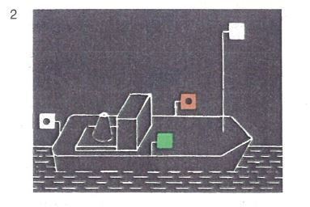
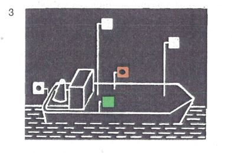

| 1. | Einzeln fahrende Fahrzeuge mit Maschinenantrieb müssen bei Nacht führen: | |
| | | | |
| | a) | ein Topplicht, das auf dem vorderen Teil des Fahrzeugs mindestens 5,00 m über der Ebene der Einsenkungsmarken gesetzt werden muß; diese Höhe darf bis auf 4,00 m verringert werden, wenn die Länge des Fahrzeugs 40,00 m nicht überschreitet; |  |
| | | |
| | b) | die Seitenlichter, die in gleicher Höhe und in einer Ebene senkrecht zur Längsebene des Fahrzeugs gesetzt werden müssen; sie müssen mindestens 1,00 m tiefer als das Topplicht und mindestens 1,00 m hinter diesem gesetzt und binnenbords derart abgeblendet werden, daß das grüne Licht nicht von Backbord, das rote Licht nicht von Steuerbord gesehen werden kann; |
| | | |
| | c) | ein Hecklicht auf dem Hinterschiff. |
| | | | |
| 2. | Einzeln fahrende Fahrzeuge mit Maschinenantrieb mit mehr als 110,00 m Länge müssen bei Nacht außerdem ein zweites Topplicht führen, und zwar auf dem Hinterschiff und in größerer Höhe als das vordere Licht. |  |
| | | | |
| 3. | Schnelle Schiffe in Fahrt müssen bei Nacht und bei Tag außer der anderen nach dieser Verordnung vorgeschriebenen Bezeichnung führen: | |
| | zwei gelbe starke schnelle Funkellichter. | |
| | Diese Funkellichter müssen übereinander in einem Abstand von etwa 1 m an einer geeigneten Stelle und so hoch geführt werden, dass sie von allen Seiten sichtbar sind. | |
| 4. | Nummer 1 und 2 gilt weder für Kleinfahrzeuge noch für Fähren. Für Kleinfahrzeuge gilt § 3.13, für Fähren gilt § 3.16. | |